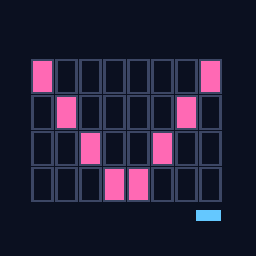

Demos.
VHS-recorded GIFs of every example shipped with the library. Regenerated automatically on every push that touches the source.


In-memory virtual terminal emulator
Feed an ANSI byte stream in, query a cell grid + cursor + mode state out — without ever spawning a real terminal. Built on a Paul-Williams VT500 state machine that mirrors charmbracelet/x/ansi/parser.
composer require sugarcraft/candy-vtuse SugarCraft\Vt\Terminal\Terminal;
$term = Terminal::create(cols: 80, rows: 24);
$term->feed("\x1b[1;31mHello\x1b[0m world");
$screen = $term->screen();
$screen->cell(0, 0)->grapheme; // 'H'
$screen->cell(0, 0)->sgr->bold; // true
$screen->cell(0, 0)->foreground(); // 16-color red
$term->feed("\x1b]2;Demo\x07");
$term->windowTitle(); // 'Demo'
$term->feed("\x1b[?1049h");
$term->mode()->altScreen; // truefeed() calls.candy-core's Util\Width for grapheme width.view() through CandyVt and assert on cell-grid state instead of raw byte strings.feed() input and replay deterministically.candy-wish to run TUIs without a real PTY.| Class | Method | Description |
|---|---|---|
| Terminal | create(cols, rows) | Create a virtual terminal |
| Terminal | feed(bytes) | Feed ANSI bytes to terminal |
| Terminal | screen() | Get current cell grid |
| Terminal | cursor() | Get cursor position |
| Terminal | mode() | Get terminal mode state (includes autoWrap) |
| Terminal | windowTitle() | Get window title from OSC |
| Screen | cell(col, row) | Get cell at position |
| Cell | grapheme, sgr, foreground(), background() | Cell content and style |
| Mode | autoWrap, withAutoWrap(bool) | DECAWM auto-wrap state and setter |
VHS-recorded GIFs of every example shipped with the library. Regenerated automatically on every push that touches the source.